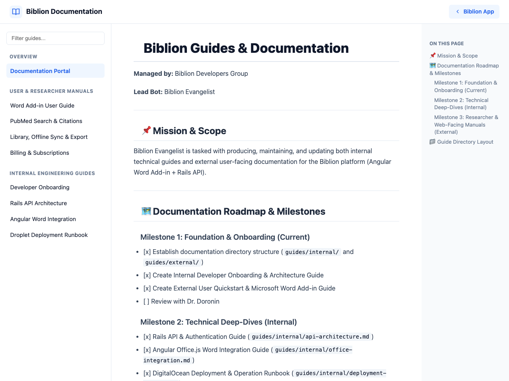

#Biblion Guides & Documentation
Managed by: Biblion Developers Group
Lead Bot: Biblion Evangelist
#📌 Mission & Scope
Biblion Evangelist is tasked with producing, maintaining, and updating both internal technical guides and external user-facing documentation for the Biblion platform (Angular Word Add-in + Rails API).

#🗺️ Documentation Roadmap & Milestones
#Milestone 1: Foundation & Onboarding (Completed)
- [x] Establish documentation directory structure (
guides/internal/andguides/external/) - [x] Create Internal Developer Onboarding & Architecture Guide
- [x] Create External User Quickstart & Microsoft Word Add-in Guide
- [x] Review with Dr. Doronin
#Milestone 2: Technical Deep-Dives (Internal - Completed)
- [x] Rails API & Authentication Guide (
guides/internal/api-architecture.md) - [x] Angular Office.js Word Integration Guide (
guides/internal/office-integration.md) - [x] DigitalOcean Deployment & Operation Runbook (
guides/internal/deployment-runbook.md)
#Milestone 3: Researcher & Web-Facing Manuals (External - Completed)
- [x] Comprehensive PubMed Search & Citation Guide (
guides/external/pubmed-search-and-citations.md) - [x] Library Management, Offline Sync & Export Guide (
guides/external/library-and-sync.md) - [x] Account, Licensing & Subscription Management (
guides/external/billing-and-subscriptions.md)
#Milestone 4: Web Pages & Angular Integration (Completed)
- [x] Static HTML documentation generator (
scripts/build_guides.py) - [x] Responsive layout with live sidebar filter, code copy, and on-page TOC
- [x] Static asset bundle deployed into Angular public folder (
biblion-app/public/guides/) - [x] In-app navigation links added to About & Support page and User Profile menu
#Milestone 5: Screenshots Incorporation (Completed)
- [x] Curate and optimize UI screenshots across guides (
guides/images/) - [x] Support responsive Markdown image tags (
alt - [x] Integrate Word taskpane, PubMed search, library sync, and billing snapshots
- [x] Recompile web pages and rebuild Angular production assets
#📁 Guide Directory Layout
code
guides/
├── README.md # Master roadmap and milestone tracking
├── html/ # Standalone compiled HTML web pages
├── internal/ # Technical documentation for engineers
│ ├── api-architecture.md
│ ├── deployment-runbook.md
│ ├── developer-onboarding.md
│ └── office-integration.md
└── external/ # Researcher-facing documentation
├── billing-and-subscriptions.md
├── library-and-sync.md
├── pubmed-search-and-citations.md
└── user-guide.md#🔨 Building Web Pages
To recompile Markdown guides into HTML web pages at any time:
bash
python3 scripts/build_guides.pyOutput is automatically placed in guides/html/ and biblion-app/public/guides/.